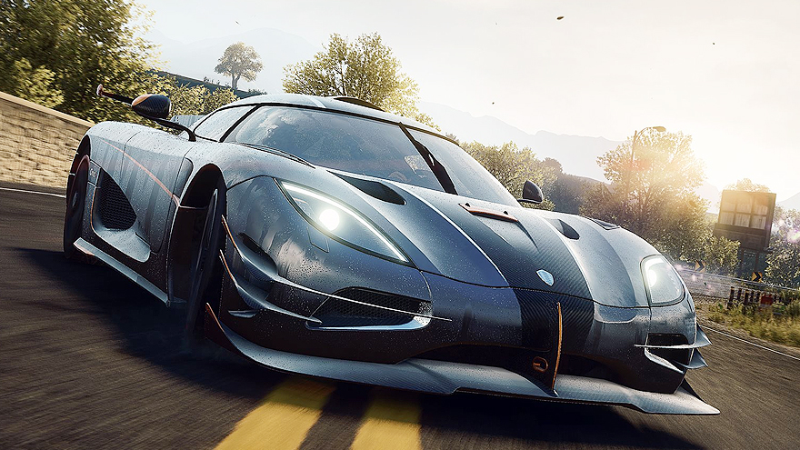

קוניגסג
 החברה נוסדה בשנת 1994 כיוזמה פרטית של כריסטיאן פון קוניגסג השבדי.
הרכב המהיר ביותר של החברה מכונה One:1
כשמו כן הוא, מייצר כוס סוס עבור כל קילוגרם שהאוטו שוקל
1361 כ"ס
תאוצה מ0 ל100 : 2.8 שניות בלבד
מהירות מירבית : כ-450 קמ"ש